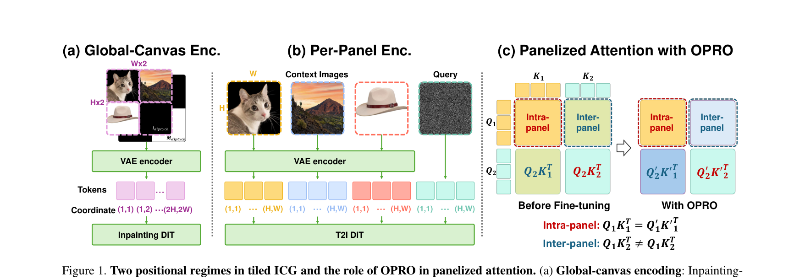
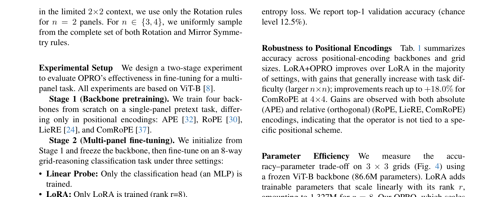
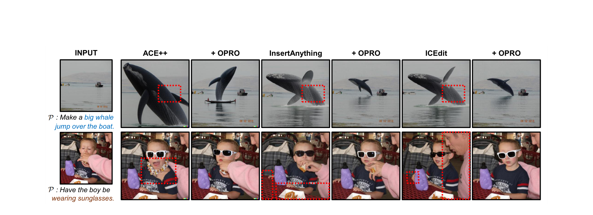
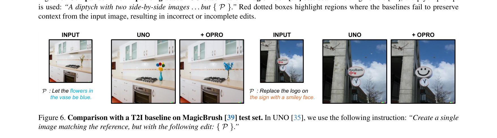
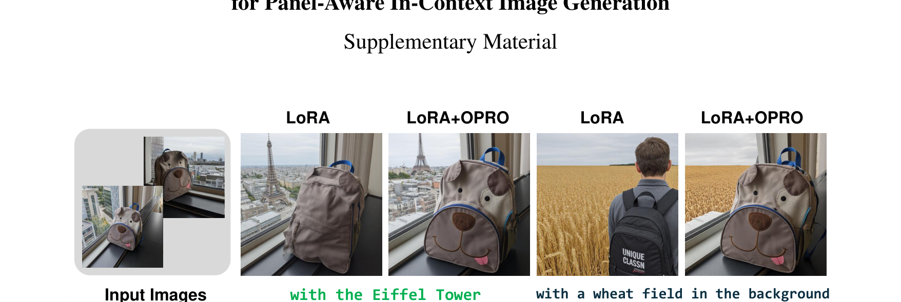

CVPR 2026
Korea Advanced Institute of Science and Technology (KAIST)
OPRO attaches a learnable, panel-specific orthogonal operator on top of any backbone’s frozen position-aware queries and keys. It exactly preserves same-panel attention and feature norms, and concentrates all of its capacity on inter-panel modulation. With only +0.93 M parameters, it improves four state-of-the-art ICG pipelines and four positional encodings (APE, RoPE, LieRE, ComRoPE) on a controlled benchmark.

For each panel p we learn a low-rank skew-symmetric generator Ap = LpRpT − RpLpT and exponentiate it to get Up = exp(Ap) ∈ SO(dh). Each token’s position-aware query/key is multiplied by Up(token). Two structural guarantees follow immediately:
Zero-interference initialization (Rp = 0) ensures
OPRO starts as exact identity. Optimization still receives a
non-degenerate gradient through Lp, so training
begins immediately without disturbing the backbone’s intra-panel
synthesis. We verified this end-to-end inside the diffusers FluxFill
pipeline — see SMOKE_TEST.md.

OPRO adds 8.4% more parameters than LoRA and improves accuracy across all four positional encodings, with the largest gain of +18.0% on ComRoPE at 4×4.
| PE | Grid | LoRA | + OPRO | Δ |
|---|---|---|---|---|
| APE | 4×4 | 19.5 | 24.2 | +4.7 |
| RoPE | 4×4 | 30.3 | 39.2 | +8.9 |
| LieRE | 3×3 | 34.2 | 42.7 | +8.5 |
| ComRoPE | 4×4 | 29.2 | 47.2 | +18.0 |


OPRO consistently improves four state-of-the-art baselines on instruction-guided image editing while adding only +0.93 M parameters (4.16% of ICEdit, 0.20% of UNO).
| Method | L1 ↓ | CLIP-I ↑ | DINO ↑ |
|---|---|---|---|
| ACE++ | 0.1215 | 0.8658 | 0.7394 |
| + OPRO | 0.1114 | 0.8749 | 0.7767 |
| InsertAnything | 0.1327 | 0.8722 | 0.7917 |
| + OPRO | 0.1269 | 0.8735 | 0.8009 |
| ICEdit | 0.1189 | 0.8703 | 0.7706 |
| + OPRO | 0.0781 | 0.9002 | 0.8531 |
| UNO | 0.0575 | 0.9236 | 0.8961 |
| + OPRO | 0.0387 | 0.9281 | 0.8980 |

On a 3-panel layout (two reference panels + one masked target), OPRO improves DINO and CLIP-I scores while preserving the subject’s identity better than LoRA-only fine-tuning.
| Method | DINO ↑ | CLIP-I ↑ |
|---|---|---|
| ICEdit (LoRA-only) | 0.5828 | 0.7376 |
| + OPRO | 0.6192 | 0.7724 |
opro/ Standalone OPRO module (drop into any attention block) compositional_reasoning/ Sec. 4.1 controlled benchmark (4 PE x 5 adapter variants) dreambooth_fluxfill/ Track A: plain FluxFill + LoRA + OPRO reference impl instructional_editing/ Track B: ICEdit wrapper + joint training script integrations/ Patches for ACE++, InsertAnything, UNO docs/ This project page SMOKE_TEST.md End-to-end FluxFill validation (with quantitative results)
@inproceedings{lee2026opro,
title = {OPRO: Orthogonal Panel-Relative Operators
for Panel-Aware In-Context Image Generation},
author = {Lee, Sanghyeon and Lee, Minwoo and Shin, Euijin and
Kim, Kangyeol and Choi, Seunghwan and Choo, Jaegul},
booktitle = {Proceedings of the IEEE/CVF Conference on Computer Vision
and Pattern Recognition (CVPR)},
year = {2026},
}
This work was supported by IITP grants funded by the Korean government (MSIT) under No. RS-2019-II190075 (AI Graduate School Program at KAIST) and the National Research Foundation of Korea (No. RS-2025-00555621), and by i-Scream Media. Compute was provided by the High-Performance Computing Support Project (NIPA grant No. RQT-25-070278, 40× H100 GPUs).